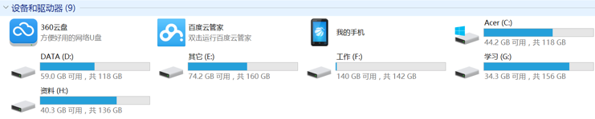

1. 操作系统（Operation System，OS）
操作系统作为接口的示意图

没有安装操作系统的计算机，通常被称为 裸机
- 如果想在 裸机 上运行自己所编写的程序，就必须用机器语言书写程序
- 如果计算机上安装了操作系统，就可以在操作系统上安装支持的高级语言环境，用高级语言开发程序
1.1 操作系统的作用
- 是现代计算机系统中 最基本和最重要 的系统软件
- 是 配置在计算机硬件上的第一层软件，是对硬件系统的首次扩展
- 主要作用是管理好硬件设备，并为用户和应用程序提供一个简单的接口，以便于使用
- 而其他的诸如编译程序、数据库管理系统，以及大量的应用软件，都直接依赖于操作系统的支持
1.2 不同应用领域的主流操作系统
- 桌面操作系统
- 服务器操作系统
- 嵌入式操作系统
- 移动设备操作系统
1> 桌面操作系统
- Windows 系列
- 用户群体大
- macOS
- 适合于开发人员
- Linux
- 应用软件少
2> 服务器操作系统
- Linux
- 安全、稳定、免费
- 占有率高
- Windows Server
- 付费
- 占有率低

3> 嵌入式操作系统
- Linux
4> 移动设备操作系统
- iOS
- Android（基于
Linux）
1.3 虚拟机
虚拟机（Virtual Machine）指通过软件模拟的具有完整硬件系统功能的、运行在一个完全隔离环境中的完整计算机系统
- 虚拟系统通过生成现有操作系统的全新虚拟镜像，具有真实操作系统完全一样的功能
- 进入虚拟系统后，所有操作都是在这个全新的独立的虚拟系统里面进行，可以独立安装运行软件，保存数据，拥有自己的独立桌面，不会对真正的系统产生任何影响
- 而且能够在现有系统与虚拟镜像之间灵活切换的一类操作系统
2. 操作系统的发展历史
2.1 Unix
1965 年之前的时候，电脑并不像现在一样普遍，它可不是一般人能碰的起的，除非是军事或者学院的研究机构，而且当时大型主机至多能提供30台终端（30个键盘、显示器)，连接一台电脑
为了解决数量不够用的问题
- 1965 年左后由 贝尔实验室 加入了 麻省理工学院 以及 通用电气 合作的计划 —— 该计划要建立一套 多使用者(multi－user)、多任务(multi－processor)、多层次(multi－level) 的 MULTICS 操作系统，想让大型主机支持 300 台终端
- 1969 年前后这个项目进度缓慢，资金短缺，贝尔实验室退出了研究
- 1969 年从这个项目中退出的 Ken Thompson 当时在实验室无聊时，为了让一台空闲的电脑上能够运行 “星际旅行（Space Travel）” 游戏，在 8 月份左右趁着其妻子探亲的时间，用了 1 个月的时间，使用汇编写出了 Unix 操作系统的原型
- 1970 年，美国贝尔实验室的 Ken Thompson，以 BCPL 语言为基础，设计出很简单且很接近硬件的 B 语言（取BCPL的首字母），并且他用 B 语言 写了第一个 UNIX 操作系统
- 1971 年，同样酷爱 “星际旅行（Space Travel）” 的 Dennis M.Ritchie 为了能早点儿玩上游戏，加入了 Thompson 的开发项目，合作开发 UNIX，他的主要工作是改造 B 语言，因为B 语言 的跨平台性较差
- 1972 年，Dennis M.Ritchie 在 B 语言 的基础上最终设计出了一种新的语言，他取了 BCPL 的第二个字母作为这种语言的名字，这就是 C 语言
- 1973 年初，C 语言的主体完成，Thompson 和 Ritchie 迫不及待地开始用它完全重写了现在大名鼎鼎的 Unix 操作系统

肯·汤普逊（左）和丹尼斯·里奇（右）
C 语言
- 在把 UNIX 移植到其他类型的计算机上使用时，C 语言强大的移植性（Portability）在此显现
- 机器语言和汇编语言都不具有移植性，为 x86 开发的程序，不可能在 Alpha，SPARC 和 ARM 等机器上运行
- 而 C 语言程序则可以使用在任意架构的处理器上，只要那种架构的处理器具有对应的 C 语言编译器和库，然后将 C 源代码编译、连接成目标二进制文件之后即可运行
Unix 家谱

2.2 Minix
- 因为 AT&T（通用电气） 的政策改变，在 Version 7 Unix 推出之后，发布新的使用条款，将 UNIX 源代码私有化，在大学中不再能使用 UNIX 源代码
- Andrew S. Tanenbaum（塔能鲍姆） 教授为了能 在课堂上教授学生操作系统运作的细节，决定在不使用任何 AT&T 的源代码前提下，自行开发与 UNIX 兼容的操作系统，以避免版权上的争议
- 以 小型 UNIX（mini-UNIX）之意，将它称为 MINIX
2.3 Linux
- 1991 年 林纳斯（Linus） 就读于赫尔辛基大学期间，对 Unix 产生浓厚兴趣，尝试着在Minix 上做一些开发工作
- 因为 Minix 只是教学使用，因此功能并不强，林纳斯 经常要用他的终端 仿真器（Terminal Emulator） 去访问大学主机上的新闻组和邮件，为了方便读写和下载文件，他自己编写了磁盘驱动程序和文件系统，这些在后来成为了 Linux 第一个内核的雏形，当时，他年仅 21 岁！
- 林纳斯 利用 GNU 的 bash 当做开发环境，gcc 当做编译工具，编写了 Linux 内核，一开始 Linux 并不能兼容 Unix
- 即 Unix 上跑的应用程序不能在 Linux 上跑，即应用程序与内核之间的接口不一致
- 一开始 Linux 只适用于 386，后来经过全世界的网友的帮助，最终能够兼容多种硬件
3. Linux 内核及发行版
3.1 Linux 内核版本
- 内核（kernel）是系统的心脏，是运行程序和管理像磁盘和打印机等硬件设备的核心程序，它提供了一个在裸设备与应用程序间的抽象层
- Linux 内核版本又分为 稳定版 和 开发版，两种版本是相互关联，相互循环
- 稳定版：具有工业级强度，可以广泛地应用和部署。新的稳定版相对于较旧的只是修正一些 bug 或加入一些新的驱动程序
- 开发版：由于要试验各种解决方案，所以变化很快
- 内核源码网址：http://www.kernel.org
所有来自全世界的对 Linux 源码的修改最终都会汇总到这个网站，由 Linus 领导的开源社区对其进行甄别和修改最终决定是否进入到 Linux 主线内核源码中
3.2 Linux 发行版本
Linux 发行版（也被叫做 GNU/Linux 发行版）通常包含了包括桌面环境、办公套件、媒体播放器、数据库等应用软件
常见的发行版本如下：
- Ubuntu
- Redhat
- Fedora
- openSUSE
- Linux Mint
- Debian
- Manjaro
- Mageia
- CentOS
- Arch
十大 Linux 服务器发行版排行榜：http://os.51cto.com/art/201612/526126.htm
在几乎每一份与 Linux 有关的榜单上，基于 Debian 的 Ubuntu 都占有一席之位。Canonical 的Ubuntu 胜过其他所有的 Linux 服务器发行版 ―― 从简单安装、出色的硬件发现，到世界级的商业支持，Ubuntu确立了难以企及的严格标准
4. Linux 的应用领域
4.1 服务器领域
- Linux 在服务器领域的应用是其重要分支
- Linux 免费、稳定、高效等特点在这里得到了很好的体现
- 早期因为维护、运行等原因同样受到了很大的限制
- 近些年来 Linux 服务器市场得到了飞速的提升，尤其在一些高端领域尤为广泛
4.2 嵌入式领域
- 近些年来 Linux 在嵌入式领域的应用得到了飞速的提高
- Linux 运行稳定、对网络的良好支持性、低成本，且可以根据需要进行软件裁剪，内核最小可以达到几百 KB 等特点，使其近些年来在嵌入式领域的应用得到非常大的提高
主要应用：机顶盒、数字电视、网络电话、程控交换机、手机、PDA、等都是其应用领域，得到了 Google、三星、摩托罗拉、NEC 等公司的大力推广
4.3 个人桌面领域
- 此领域是传统 Linux 应用最薄弱的环节
- 传统 Linux 由于界面简单、操作复杂、应用软件少的缺点，一直被 Windows 所压制
- 近些年来随着 Ubuntu、Fedora 等优秀桌面环境的兴起，同时各大硬件厂商对其支持的加大，Linux 在个人桌面领域的占有率在逐渐的提高
在 Ubuntu 中玩 QQ

5. 文件和目录
5.1 单用户操作系统和多用户操作系统（科普）
单用户操作系统：指一台计算机在同一时间 只能由一个用户 使用，一个用户独自享用系统的全部硬件和软件资源
- Windows XP 之前的版本都是单用户操作系统
多用户操作系统：指一台计算机在同一时间可以由 多个用户 使用，多个用户共同享用系统的全部硬件和软件资源
- Unix 和 Linux 的设计初衷就是多用户操作系统
5.2 Windows 和 Linux 文件系统区别
5.2.1 Windows 下的文件系统
- 在
Windows下，打开 “计算机”，我们看到的是一个个的驱动器盘符：

- 每个驱动器都有自己的根目录结构，这样形成了多个树并列的情形，如图所示：

5.2.2 Linux 下的文件系统
- 在
Linux下，我们是看不到这些驱动器盘符，我们看到的是文件夹（目录）：

Ubuntu没有盘符这个概念，只有一个根目录/，所有文件都在它下面

5.2.3 用户目录
位于 /home/user，称之为用户工作目录或家目录，表示方式：
1 | /home/user |
5.2.4 Linux 主要目录速查表
- /：根目录，一般根目录下只存放目录，在 linux 下有且只有一个根目录，所有的东西都是从这里开始
- 当在终端里输入
/home，其实是在告诉电脑，先从/（根目录）开始，再进入到home目录
- 当在终端里输入
- /bin、/usr/bin：可执行二进制文件的目录，如常用的命令 ls、tar、mv、cat 等
- /boot：放置 linux 系统启动时用到的一些文件，如 linux 的内核文件：
/boot/vmlinuz，系统引导管理器：/boot/grub - /dev：存放linux系统下的设备文件，访问该目录下某个文件，相当于访问某个设备，常用的是挂载光驱
mount /dev/cdrom /mnt - /etc：系统配置文件存放的目录，不建议在此目录下存放可执行文件，重要的配置文件有
- /etc/inittab
- /etc/fstab
- /etc/init.d
- /etc/X11
- /etc/sysconfig
- /etc/xinetd.d
- /home：系统默认的用户家目录，新增用户账号时，用户的家目录都存放在此目录下
~表示当前用户的家目录~edu表示用户edu的家目录
- /lib、/usr/lib、/usr/local/lib：系统使用的函数库的目录，程序在执行过程中，需要调用一些额外的参数时需要函数库的协助
- /lost+fount：系统异常产生错误时，会将一些遗失的片段放置于此目录下
- /mnt: /media：光盘默认挂载点，通常光盘挂载于 /mnt/cdrom 下，也不一定，可以选择任意位置进行挂载
- /opt：给主机额外安装软件所摆放的目录
- /proc：此目录的数据都在内存中，如系统核心，外部设备，网络状态，由于数据都存放于内存中，所以不占用磁盘空间，比较重要的文件有：/proc/cpuinfo、/proc/interrupts、/proc/dma、/proc/ioports、/proc/net/* 等
- /root：系统管理员root的家目录
- /sbin、/usr/sbin、/usr/local/sbin：放置系统管理员使用的可执行命令，如 fdisk、shutdown、mount 等。与 /bin 不同的是，这几个目录是给系统管理员 root 使用的命令，一般用户只能”查看”而不能设置和使用
- /tmp：一般用户或正在执行的程序临时存放文件的目录，任何人都可以访问，重要数据不可放置在此目录下
- /srv：服务启动之后需要访问的数据目录，如 www 服务需要访问的网页数据存放在 /srv/www 内
- /usr：应用程序存放目录
- /usr/bin：存放应用程序
- /usr/share：存放共享数据
- /usr/lib：存放不能直接运行的，却是许多程序运行所必需的一些函数库文件
- /usr/local：存放软件升级包
- /usr/share/doc：系统说明文件存放目录
- /usr/share/man：程序说明文件存放目录
- /var：放置系统执行过程中经常变化的文件
- /var/log：随时更改的日志文件
- /var/spool/mail：邮件存放的目录
- /var/run：程序或服务启动后，其 PID 存放在该目录下